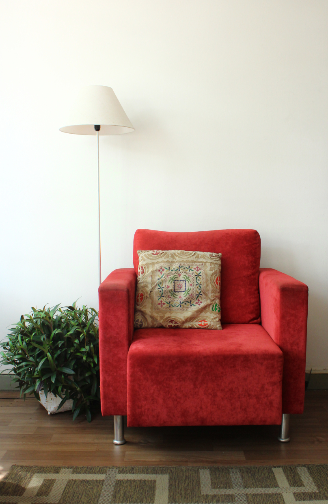
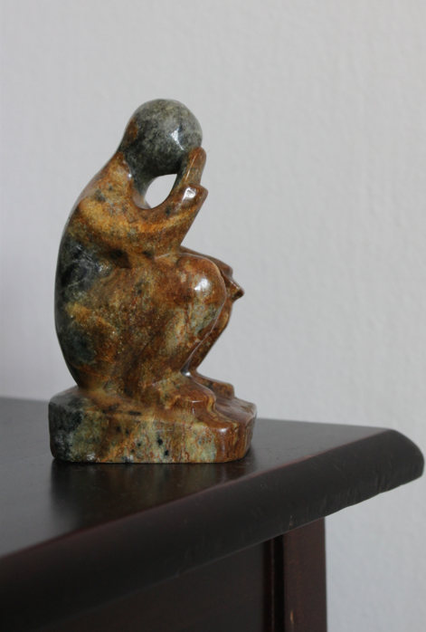
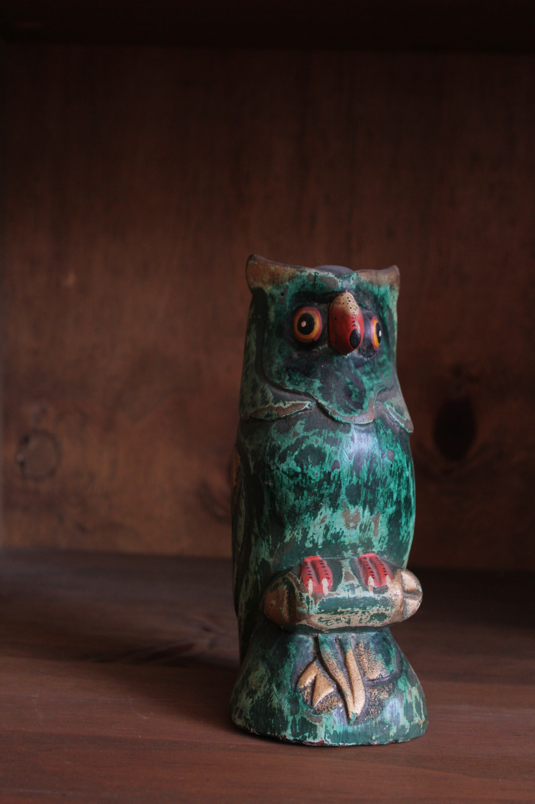
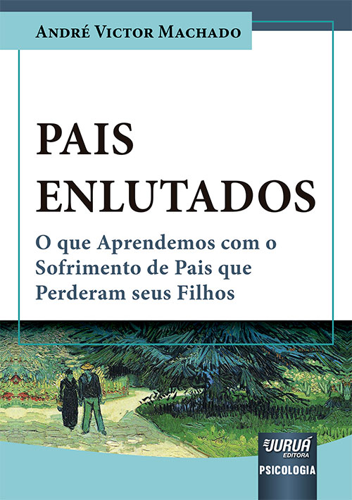
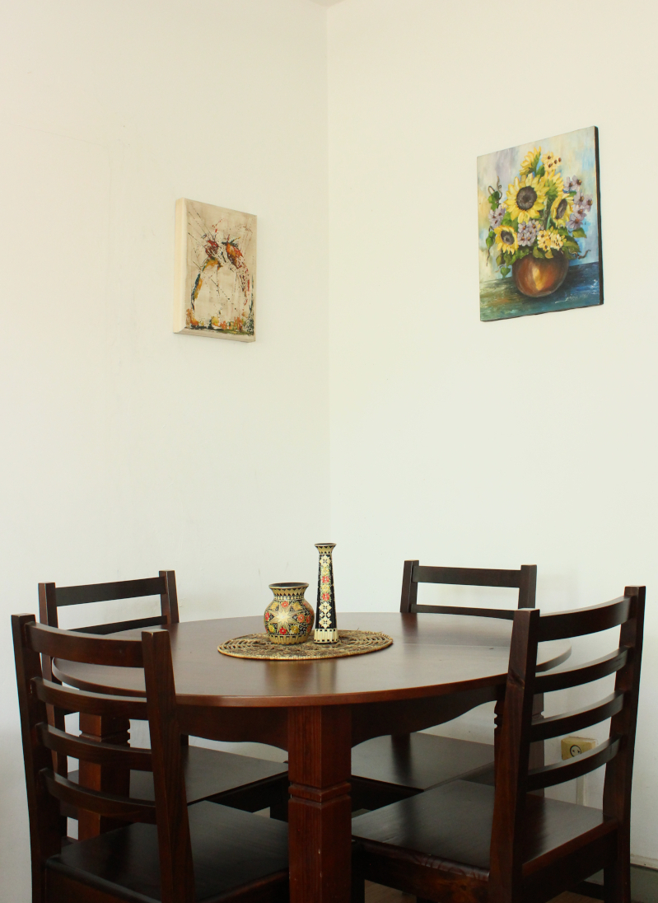
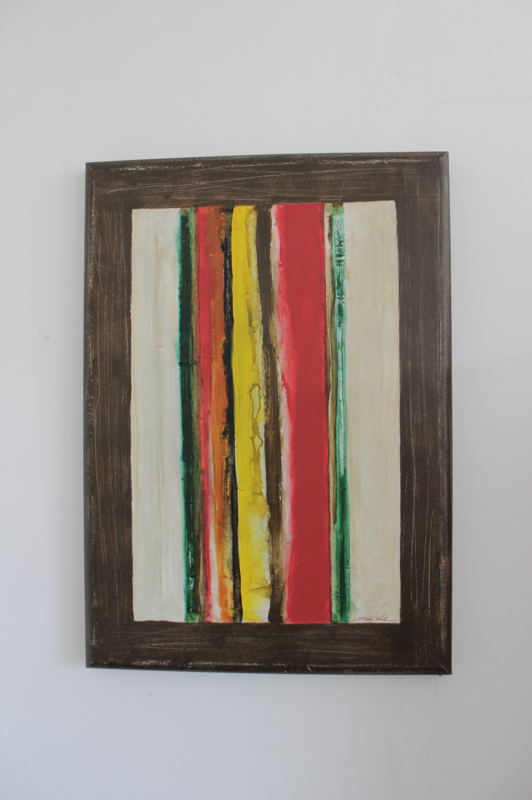
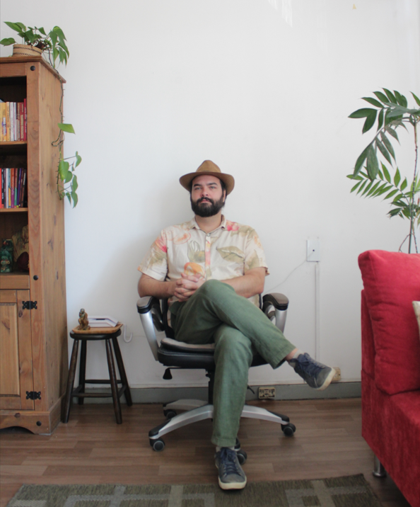

Instigado pelos mistérios da mente humana e da riqueza da vida subjetiva de cada um de nós, escolhi a psicologia como forma de entrada nesse rico mundo interno e há mais de dez anos trabalho com os temas de subjetividade e saúde mental. Em tempos conturbados como os de hoje, aposto na capacidade formativa e transformadora que o nosso próprio sofrimento tem de nos ensinar e no poder que o autoconhecimento e o autocuidado nos oferecem como ferramentas de melhorar nossas próprias vidas e a daqueles ao nosso redor.

Formado em Psicologia pela Universidade Federal do Paraná (UFPR), onde também concluí o mestrado em Psicologia Clínica, atendo desde a graduação no mesmo consultório, no centro de Curitiba. Há mais de quinze anos, desenvolvo meu trabalho em diálogo com o rigor científico e com a experiência em instituições acadêmicas, de pesquisa e de serviço à comunidade, articulando a tradição teórica às contribuições da pesquisa contemporânea.
Acesse meu Currículo LattesPsicólogo graduado pela Universidade Federal do Paraná (UFPR)
Mestre em Psicologia Clínica pela Universidade Federal do Paraná (UFPR)



Fruto de anos trabalhando com o tema do luto, este livro honra com um dos tipos mais esquecidos e poucos comentados dentro do tema, o luto paterno, e coroa uma década de trabalho clínico e pesquisa acadêmica. Construído a partir de entrevistas e atendimentos feitos a pais que perderam filhos, quatro histórias de vida são exploradas sob o prisma do sofrimento quase indizível que é ver os sonhos e expectativas para os filhos darem lugar ao horror que é se ver diante de uma continuidade natural rompida. Analisando os vínculos que são rompidos na perda, descobre-se que o amor dos pais se manifesta, sobretudo, na forma dos cuidados de providência e educação que dão aos filhos, e que por isso se sentem fracassados em seu papel quando tem a suas capacidades parentais perdidas, tendo que redescobrir o significado de ser um pai após a perda de um filho. Três histórias de sucesso – e uma de fracasso – em lutos extremamente difíceis são relatados neste livro, junto com uma história teórico-clínica e social dos temas de luto na contemporaneidade. Para pessoas sofrendo com o próprio luto e para interessados em conhecer mais do tema.
Saiba maisO consultório é composto por objetos, livros e obras de arte que acompanham há anos o meu trabalho clínico. A poltrona, a luz do abajur, a mesa e as cadeiras formam um espaço pensado para o encontro, a conversa e o tempo de cada pessoa.


